- 🔴 RED — write a test that fails for the right reason
- 🟢 GREEN — simplest code that makes the test pass
- 🔵 REFACTOR — clean up, tests remain green
- 📚 Tests act as documentation and a safety net
This presentation is designed for desktop or projector displays.
← Back to curriculumPython Object Oriented Programming
Course 10
← → to navigate
Where we are in the journey
What are the three phases of the TDD cycle?
A) Write — Test — Ship
B) Plan — Code — Debug
C) Red — Green — Refactor
D) Arrange — Act — Assert
🔴 RED — write a failing test. 🟢 GREEN — make it pass with the simplest code. 🔵 REFACTOR — clean up without breaking the tests. (AAA is about one test's structure, not the TDD loop.)
Recap: Lecture 09
def test_deposit_adds_money(): acc = Account() acc.deposit(100) assert acc.balance == 100 # Fail → implement → pass → clean
What does the 'D' in SOLID stand for?
A) Decorator Pattern
B) Dependency Inversion Principle
C) Data Abstraction Principle
D) Dynamic Binding Principle
DIP says high-level modules should not depend on low-level modules — both should depend on abstractions.
Recap: Lecture 07
class NotificationService: def __init__(self, sender): self._sender = sender def notify(self, msg): self._sender.send(msg) sms = SMSSender() svc = NotificationService(sms)
Which design pattern solves the problem in this code?
class Pizza: def __init__(self, size, crust, sauce, cheese, toppings, extra_cheese, extra_sauce, gluten_free, vegan, thin_crust, ...): # 15+ parameters, most optional, most combinations nonsensical ... pizza = Pizza("L", "thin", None, True, ["mushrooms"], False, None, ...)
A) Singleton
B) Builder
C) Strategy
D) Factory Method
Builder replaces the monstrous constructor with step-by-step fluent methods: Pizza.builder().size("L").thin_crust().add("mushrooms").build().
Recap: Lecture 08
pizza = (Pizza.builder() .size("L") .thin_crust() .add("mushrooms") .extra_cheese() .build()) # Readable. No positional noise. # Only the options you want.
🟡 Strategy — swappable algorithms
🟢 Decorator — layered behaviors
🔸 Factory Method — delegated creation
🔷 Facade — simplified interface
🔴 Iterator — sequential access
🟣 Observer — one-to-many notifications
✅ Anti-patterns & AI in design
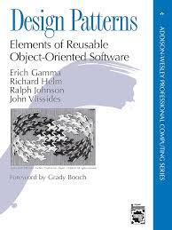
Gamma, Helm, Johnson, Vlissides — the Gang of Four
🏭
How objects are created
🧩
How objects are composed
💬
How objects communicate
Define a family of algorithms, put each in a separate class,
and make them interchangeable.
Imagine you have to get to the airport. Different strategies:

from abc import ABC, abstractmethod class RouteStrategy(ABC): @abstractmethod def calculate_route(self, origin, destination): pass class WalkingStrategy(RouteStrategy): def calculate_route(self, origin, destination): return f"Walking from {origin} to {destination} via parks" class RoadStrategy(RouteStrategy): def calculate_route(self, origin, destination): return f"Driving from {origin} to {destination} via highway" class PublicTransportStrategy(RouteStrategy): def calculate_route(self, origin, destination): return f"Taking bus from {origin} to {destination}"
class Navigator: def __init__(self, strategy: RouteStrategy): self.strategy = strategy def navigate(self, origin, destination): return self.strategy.calculate_route(origin, destination) nav = Navigator(WalkingStrategy()) print(nav.navigate("Home", "Airport")) nav.strategy = RoadStrategy() # swap at runtime! print(nav.navigate("Home", "Airport"))
✅ Pros
❌ Cons
Attach new behaviors to objects by wrapping them
in special wrapper objects.
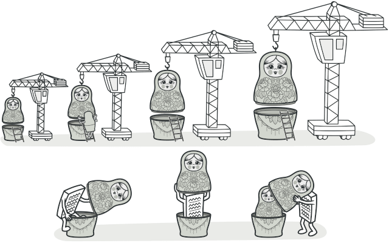
Wearing layers of clothing:

from abc import ABC, abstractmethod class Text(ABC): @abstractmethod def render(self): pass class PlainText(Text): def __init__(self, content): self.content = content def render(self): return self.content class TextDecorator(Text): def __init__(self, wrapped: Text): self.wrapped = wrapped class BoldText(TextDecorator): def render(self): return f"<b>{self.wrapped.render()}</b>" class ItalicText(TextDecorator): def render(self): return f"<i>{self.wrapped.render()}</i>"
text = PlainText("Hello") bold = BoldText(text) bold_italic = ItalicText(bold) print(bold_italic.render()) # <i><b>Hello</b></i>
Python has built-in decorator syntax using @:
import time def time_logger(func): def wrapper(*args, **kwargs): start = time.time() result = func(*args, **kwargs) elapsed = time.time() - start print(f"{func.__name__} took {elapsed:.4f}s") return result return wrapper
@time_logger def process_data(data): time.sleep(0.5) return f"Processed {len(data)} items" process_data([1, 2, 3]) # process_data took 0.5012s
@auth_requiredGuard a function so only authenticated users can call it:
def auth_required(func): def wrapper(user, *args, **kwargs): if not user.is_authenticated: raise PermissionError("Login required") return func(user, *args, **kwargs) return wrapper
@auth_required def view_profile(user): return f"Welcome, {user.name}" view_profile(alice) # Welcome, Alice view_profile(guest) # PermissionError: Login required
✅ Pros
❌ Cons
Creational Pattern
Factory Method
Define an interface for creating objects — let subclasses decide which class to instantiate
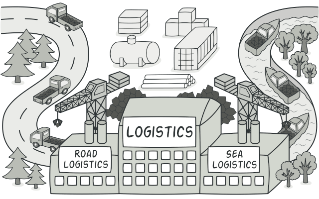
Imagine a logistics app that initially only handles truck transport.
Truck classTruck is hardcoded everywhere
from abc import ABC, abstractmethod class Transport(ABC): @abstractmethod def deliver(self): pass class Truck(Transport): def deliver(self): return "Delivering by land in a box" class Ship(Transport): def deliver(self): return "Delivering by sea in a container"
class TransportFactory: @staticmethod def create_transport(transport_type: str) -> Transport: factories = { "truck": Truck, "ship": Ship, } return factories[transport_type]()
transport = TransportFactory.create_transport("ship") print(transport.deliver()) # "Delivering by sea in a container"
Structural Pattern
Facade
Provide a simplified interface to a complex subsystem
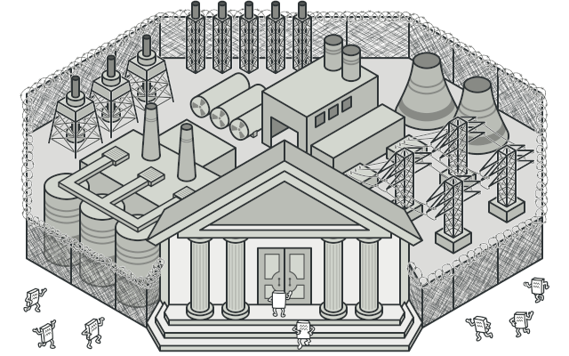
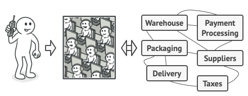
The customer talks only to the operator. The warehouse, packaging, suppliers, delivery, and taxes are all hidden behind the facade.
A video conversion library internally uses many classes:
class VideoFile: def __init__(self, filename): self.filename = filename class CodecFactory: def extract(self, file): return f"codec for {file.filename}" class BitrateReader: def read(self, file, codec): return f"reading {file.filename}" class AudioMixer: def fix(self, result): return f"fixing audio: {result}"
class VideoConverter: def convert(self, filename, format): file = VideoFile(filename) codec = CodecFactory().extract(file) result = BitrateReader().read(file, codec) result = AudioMixer().fix(result) return f"{filename} converted to {format}"
converter = VideoConverter() print(converter.convert("funny_cats.ogg", "mp4")) # "funny_cats.ogg converted to mp4"
Behavioral Pattern
Iterator
Traverse a collection without exposing its internal structure
Think of visiting a city as a tourist:
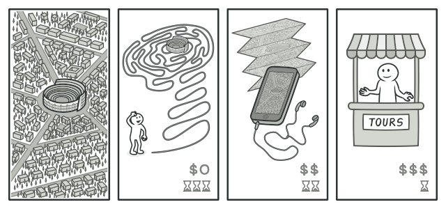
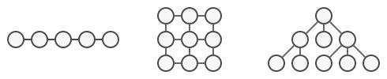
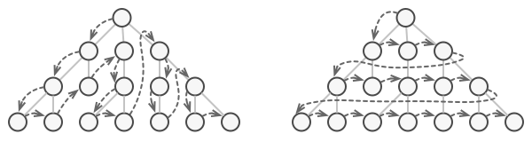
Adding new collection types bloats the client with more traversal variants. Every new structure forces every consumer to learn its internals.
__iter__ and __next__for loop uses the iterator protocol.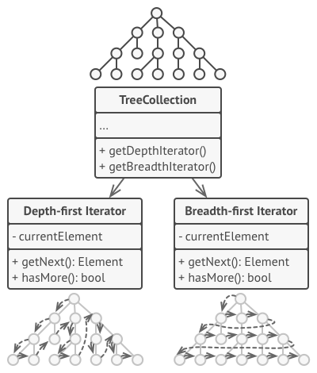
Writing __iter__ + __next__ is verbose. Python offers a shortcut: generator functions. Use yield instead of return — Python builds the iterator for you.
A full generator in 4 lines:
def countdown(n): while n > 0: yield n n -= 1 for i in countdown(3): print(i) # 3, 2, 1
How it works — each yield pauses and resumes:
countdown(3) returns a generator object, an iterator for freeyield n pauses execution and hands n to the callerStopIteration is raised automaticallyAlso: generator expressions — one-liners:
squares = (x * x for x in range(10)) print(next(squares)) # 0 print(next(squares)) # 1 print(sum(squares)) # 4+9+16+...+81 = 280
Python's for loop is syntactic sugar for the iterator protocol:
it = iter(collection) while True: try: item = next(it) except StopIteration: break
for item in collection: process(item)
__iter__ + __next__ works with for, list(), sum(), etc.Behavioral Pattern
Observer
Notify many objects when one of them changes
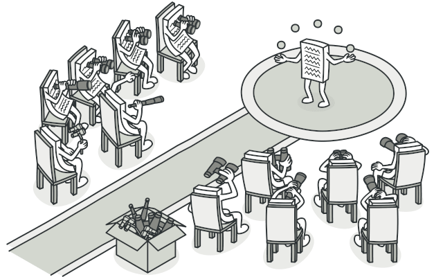
Think of a YouTube channel:

A Customer wants the new iPhone model that's arriving at a Store soon. Two bad options:
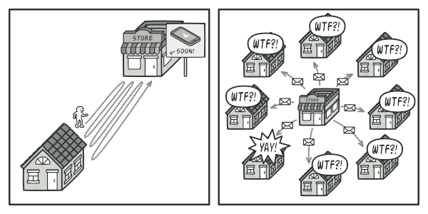
The Subject keeps a list of observers:
class Order: def __init__(self): self._observers = [] self._status = "new" def subscribe(self, observer): self._observers.append(observer) def set_status(self, status): self._status = status for obs in self._observers: obs.update(self)
Observers implement a simple interface:
class EmailNotifier: def update(self, order): print(f"Email: order is now {order._status}") class Logger: def update(self, order): print(f"[LOG] {order._status}")
Usage:
order = Order() order.subscribe(EmailNotifier()) order.subscribe(Logger()) order.set_status("shipped") # Email: order is now shipped # [LOG] shipped
✅ Pros
❌ Cons
| Pattern | Use when… |
|---|---|
| Strategy | You have several algorithms doing the same thing and want to pick at runtime |
| Decorator | You need to add behavior to an object without subclassing |
| Factory Method | Object creation logic shouldn't live in the caller |
| Facade | Client code is drowning in subsystem complexity |
| Iterator | You want to traverse a collection without exposing internals |
| Observer | Multiple objects must react to a state change |
@app.route is a Decorator, Django signals are an Observer, open() is a FactoryCommon solutions that are ineffective or counterproductive.
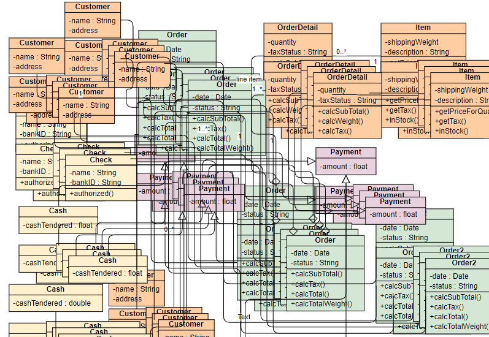
A single object that does too much — knows too much, controls too much.
class Application: def authenticate_user(...): ... def process_payment(...): ... def send_email(...): ... def generate_report(...): ... def manage_inventory(...): ... def handle_shipping(...): ...
AuthService, PaymentService, etc.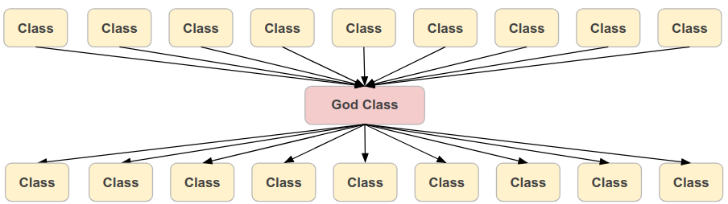
Tangled control flow, deeply nested, hard to follow.
def process(data): if data: for item in data: if item.active: if item.type == "A": if item.value > 0: for sub in item.children: if sub.valid: ...
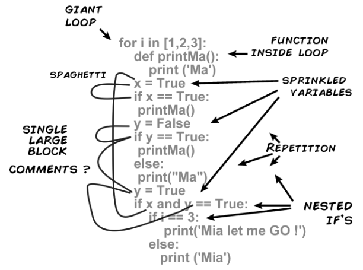
"If all you have is a hammer, everything looks like a nail."
You just learned 6 design patterns. Now every problem looks like one of them.
# "I need to add two numbers. Obviously Strategy." class AdditionStrategy: def execute(self, a, b): return a + b class Calculator: def __init__(self, s): self.s = s def calc(self, a, b): return self.s.execute(a, b) calc = Calculator(AdditionStrategy()) result = calc.calc(2, 3) # 20 lines to compute 2 + 3
The same logic repeated 5 times, each slightly different. Fix a bug in one place — it still lives in the other four.
def process_customer(data): if not data: return cleaned = data.strip().lower() db.save("customer", cleaned) def process_order(data): if not data: return cleaned = data.strip().lower() db.save("order", cleaned) def process_product(data): if not data: return cleaned = data.strip().lower() db.save("product", cleaned)
You learned Singleton in Lecture 8. Now every service is a Singleton — which makes them all hidden global state.
class UserService(Singleton): ... class OrderService(Singleton): ... class EmailService(Singleton): ... class PaymentService(Singleton): ... # Now every test shares state. Tests pollute each other. # Dependencies are invisible. Swapping for a mock is painful.
🤖 AI & Design Patterns
AI knows every GoF pattern by heart — do you still need to learn them?
✅ Pros
❌ Cons
for loop uses itLibraries & Frameworks
Pandas, NumPy, FastAPI, Flask — and how to build your own.